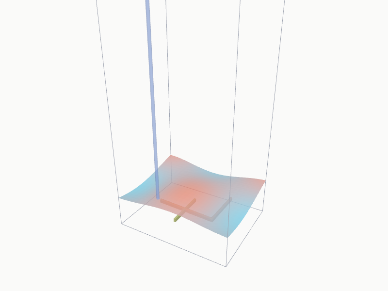

Сцена модуля QGIS Isoliner3D без QGIS. Программа открывает пакет сцены .i3dscene и показывает выработки, залежи и поверхности той же камерой, что и окно просмотра в QGIS.

scene_demo.i3dscene из архива. Кадр отрисован программой на той же камере, что сохранил модуль. В браузере эта сцена открывается сразу, её можно вращать и облетать.bin\isoliner-scene.exe.Пакет - ZIP с описанием сцены и геометрией в GLB. Его пишет модуль Isoliner3D, программа читает и сохраняет обратно без потерь.
scene_demo.i3dscene ├── scene.json # камера, виды облёта, части, цвета, преувеличение └── *.glb # вершины - сдвиг от круглой точки начала в float32 # точка начала - в double, в видеокарту мировые координаты не попадают
В архиве лежит заготовка расширения RustGIS - bin\isoliner-rustgis.exe и манифест plugin.json. Расширение работает отдельным процессом и обменивается с RustGIS строками JSON.
| Команда | Что делает |
|---|---|
| scene | Открывает пакет .i3dscene в окне Isoliner Scene |
| tools | Описания инструментов 2.23 и 2.24 на языке RustGIS |
| run | Расчёт инструмента по значениям JSON, итог - тела, поля и отчёт |
| Инструмент | Пример из модуля | Итог |
|---|---|---|
| 2.24 Тело протяжкой сечения | Штрек 4 × 3 м, длина 180 м | 2160 м³ |
| 2.23 Уровень заполнения | 25 % объёма тела, почва -300 м | -299,25 м |
Расчёты сверены с прогонами модуля слово в слово. В самом RustGIS расширение ещё не проверялось.
34 теста по образцам, которые собирает модуль Isoliner3D - чтение пакета демо, камера и облёт кадр в кадр, объёмы тел, расчёты 2.23 и 2.24, кадр сцены без окна. Тесты и проверка лицензий зависимостей идут на GitHub Actions под Windows и Linux.
Isoliner Scene is a viewer for scene packages (.i3dscene) exported by the Isoliner3D QGIS plugin. It shows mine workings, ore bodies, surfaces and lines with the camera saved in QGIS, with transparency, vertical exaggeration and fly-through views. It runs in the browser and on Windows. The archive also contains an untested draft of the Isoliner3D extension for RustGIS. Russian and English interface. Apache 2.0.